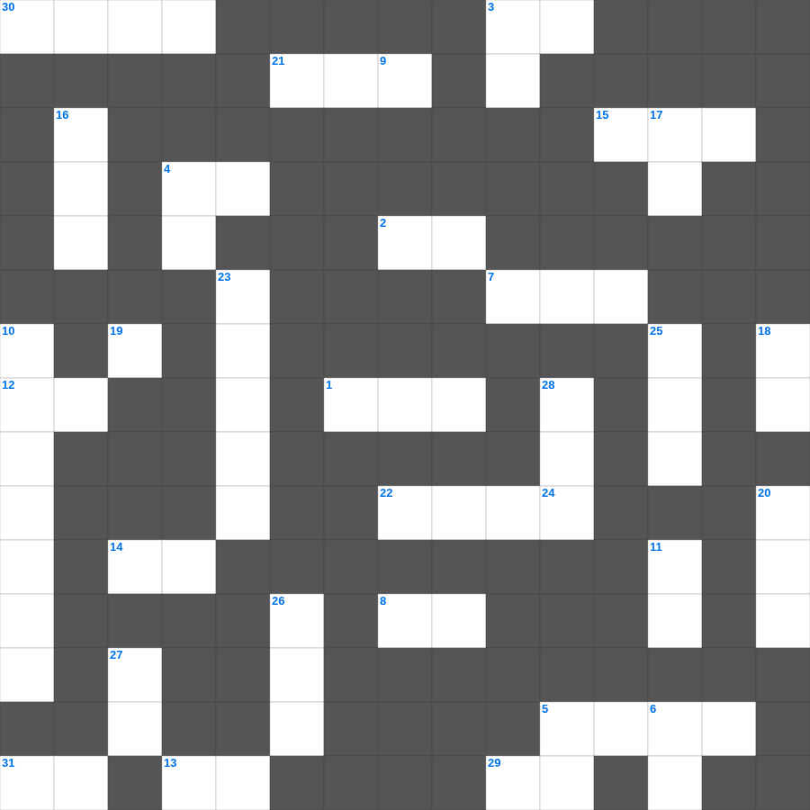

느헤미야 마스터 100 (1/2)
📌 서비스 정의
십자가로세로는 교회 주보와 주일학교에서 사용할 수 있는 성경 기반 가로세로 퍼즐 서비스입니다. 성경 인물, 사건, 핵심 구절을 바탕으로 제작되었습니다. 온라인 풀이 및 인쇄 기능을 제공합니다.
📖 느헤미야란?
느헤미야는 페르시아 왕의 신임을 받은 느헤미야가 예루살렘으로 돌아가 무너진 성벽을 재건하고, 신앙 공동체의 질서를 회복하는 이야기를 담고 있습니다.
📚 느헤미야의 주요 사건·주제
느헤미야의 부르심 · 예루살렘 성벽 재건 · 반대 세력과의 대결 · 율법 책 낭독과 회개 · 사회 개혁과 안식일 회복
느헤미야를 주제로 한 느헤미야 성경퀴즈입니다. 35개의 단어를 맞춰보세요! 가로세로 낱말 퍼즐 형식으로 느헤미야의 핵심 내용을 재미있게 복습할 수 있습니다.

📝 가로 힌트
1. 다섯째 대접: 짐승의 왕좌에 쏟으니 그 나라가 곧 이것하게 되며
2. 이스라엘 백성이 광야에서 처음 진을 친 곳
3. 장로를 세울 때 조건: 한 이것의 남편이어야 함
4. 엘리바스가 욥에게 권한 화해 '너는 하나님과 이것하고 평안하라'
5. 감독의 자격: 무엇에 절제하며 무엇하며...
7. 증거궤 위를 덮는 뚜껑
8. 양식이 없어 주림이 아니며 물이 없어 갈함이 아니요 여호와의 이것을 듣지 못한 기갈이라
12. 성령의 열매 첫 번째
12. 하나님은 불의하지 아니하사 너희 행위와 그의 이름을 위하여 나타낸 이것을 잊어버리지 아니하시느니라
13. 몸은 상아에 이것을 입힌 듯하고 매끄럽구나
14. 내가 이것을 부끄러워하지 아니하노니 이 이것은 모든 믿는 자에게 구원을 주시는 하나님의 능력이 됨이라
15. 그를 내게 머물러 있게 하여 내가 복음을 위하여 갇힌 중에서 네 대신 나를 이것하게 하고자 하나
19. 비와 눈이 하늘로부터 내려서 그리로 되돌아가지 아니하고 땅을 적셔서 이것이 나게 하며
21. 하나님의 말씀을 집 이것과 바깥 문에 기록하라
22. 느헤미야가 성벽 공사를 마친 기간 '제 이것 일'
29. 증인의 수 '두 세 이것의 입으로 확정할 것이니라'
30. 모세가 늦어지자 백성들이 만든 우상
31. 자기의 마음을 제어하지 아니하는 자는 성벽이 없는 이것과 같으니라
📝 세로 힌트
3. 그들은 이것처럼 언약을 어기고 거기에서 나를 반역하였느니라
4. 아합 왕이 변장하고 전쟁에 나갔으나 맞은 것
5. 지나치게 이것자가 되지도 말며 지나치게 지혜자도 되지 말라
6. 즐거워하는 자들과 함께 즐거워하고 이것하는 자들과 함께 이것하라
9. 자랑하는 자는 이것 안에서 자랑할지니라
10. 여로보암이 이스라엘을 떠나게 한 사람들
11. 이스라엘 자손은 스스로 깨끗하게 하여 이것할지어다
16. 너희 이것을 기경하라 지금이 곧 여호와를 찾을 때니
17. 새 노래로 여호와께 찬송하라 그는 이것 한 일을 행하사
18. 보라 내가 너희에게 이것을 말하노니 우리가 다 잠잘 것이 아니요 마지막 나팔에 홀연히 다 변화되리니
20. 유다 장로들이 대적들에게 자신들을 소개한 말 '하늘과 땅의 이것의 종'
23. 아내의 부정 의심이 생길 때 드리는 제사
24. 내 아버지께서 이제까지 이것하시니 나도 이것한다 하시매
25. 하나님이 묘사하신 '산 염소'가 새끼 치는 기한을 네가 이것하느냐
26. 에스라와 함께 귀환한 레위 사람들을 찾은 곳
27. 내 영혼아 네가 어찌하여 이것 하며 어찌하여 내 속에서 불안해하는가
28. 히스기야 때 레위 사람들이 성전을 정결하게 하는 데 걸린 날수
🧩 이 퍼즐에서 배우는 내용
이 퍼즐은 느헤미야 마스터 100 (1/2)의 핵심 단어와 개념을 자연스럽게 복습할 수 있도록 구성되었습니다. 주일학교 수업이나 개인 성경공부에서 학습 내용을 점검하는 용도로 바로 활용할 수 있습니다.
🧑🏫 교회 교육 자료 활용
이 퍼즐은 주일학교 교재 추천 자료로 활용할 수 있고, 주일학교 주보에 넣기 좋은 분량으로 구성되어 있습니다. 수업용 주일학교 교안에 활동지로 붙이거나, 예배 후 복습용 주일학교 공과교재로 바로 사용할 수 있습니다.
🏷️ 키워드
느헤미야 성경퀴즈, 느헤미야, 십자가로세로, 성경퀴즈, 말씀퀴즈, 가로세로퍼즐, 주일학교 교재 추천, 주일학교 주보, 주일학교 교안, 주일학교 공과교재